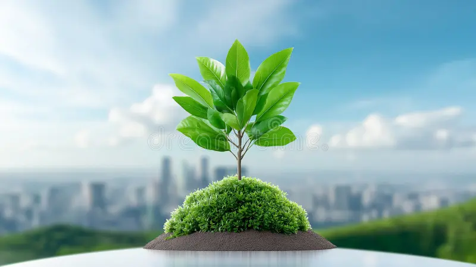

Welcome to Green Earth Initiative
Green Earth Initiative, your community for driving positive environmental change! We are a non-profit organization dedicated to fostering sustainable communities, protecting our planet, and empowering everyone to become a steward for a greener future through action and awareness. Join our movement to reduce environmental impact, advocate for a thriving planet, and secure a healthier world for generations to come.
Our Key Areas of Work
- Ecological restoration
- Biodiversity protection
- Climate action
- Waste management
- advocating for sustainable practices in agriculture, transport, and the built environment